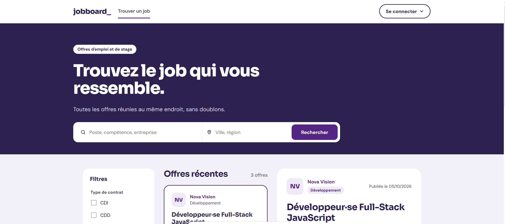
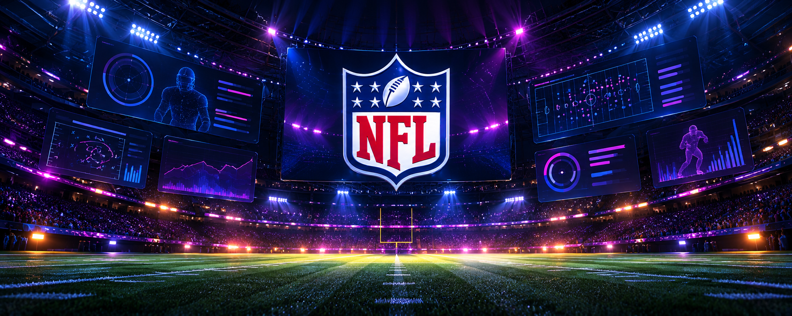
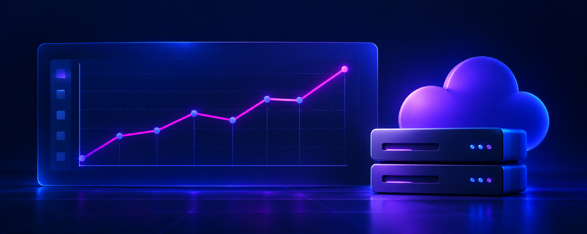
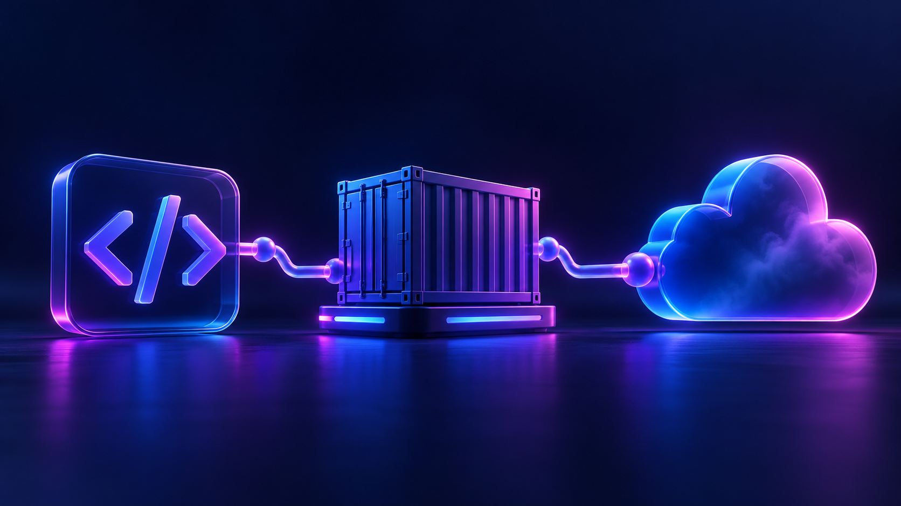

Des projets académiques, personnels et en équipe qui me permettent d’appliquer mes compétences techniques, d’explorer de nouveaux outils et de résoudre des problématiques concrètes.
01 / Projet en équipe Réalisé · Oct. 2026

Job Board – M&A Corporation
Plateforme d’offres d’emploi
Projet réalisé en binôme avec Aurélien dans le cadre du Bootstrap Epitech. Une plateforme permettant de consulter des offres, de postuler et de publier des annonces, avec un espace d’administration.
Consultation et pages de détail des annonces.
Authentification candidat et entreprise avec JWT.
Candidatures enregistrées dans SQLite.
Administration des données et échanges via les API.
J’ai développé et stylisé les composants AdCard et AdList, intégré des données provenant de l’API et créé le Header et le Footer. J’ai travaillé sur l’interface et le responsive, et participé aux tests et à l’intégration.
Ce projet m’a permis de mieux comprendre les échanges entre React, FastAPI et SQLite et de pratiquer Git en binôme. Le backend et l’authentification sont des fonctionnalités du projet collectif ; je ne m’en attribue pas seule le développement.
Pour présenter les annonces dans React, j’ai intégré les données de l’API aux composants AdList et AdCard, puis travaillé leur mise en forme en CSS. Les offres sont ainsi affichées sous forme de liste et de cartes : un exemple concret du lien entre les données du backend et l’interface.
02 / Hackathon Réalisé · Oct. 2026

Illustration conceptuelle
NFL Big Data Bowl
Analyse de données sportives · Paris Side Quest
Projet réalisé en équipe de trois en octobre 2026. Exploration des données NFL autour de l’hypothèse du « joueur invisible » et réalisation de visualisations avec Python, pandas et matplotlib.
Participation à l’exploration des données et au travail de représentation graphique en équipe. Cette expérience m’a permis de pratiquer Python, pandas et matplotlib dans un contexte d’analyse.
Projets Cloud et DevOps
Projet En développement
Illustration conceptuelle
Hospital DevOps Platform
Projet fil rouge · En développement
Développement d’un backend et d’API avec FastAPI et PostgreSQL, conteneurisation avec Docker et mise en place progressive d’une chaîne CI/CD avec GitHub Actions.
Python
FastAPI
PostgreSQL
Docker
GitHub Actions
Projet Terminé

Illustration conceptuelle
Cloud Cost Monitoring & Alerting
Surveillance des coûts Cloud
Détection d’anomalies sur des coûts Cloud simulés, envoi d’alertes e-mail et sécurisation des secrets via un fichier .env.
Python
Docker
SMTP
Git
Projet Terminé
Illustration conceptuelle
Docker Mini App
Application web conteneurisée
Application web à trois tiers avec Flask, PostgreSQL et Nginx. Les services sont conteneurisés et orchestrés avec Docker Compose.
Docker
Flask
PostgreSQL
Nginx
Projet Envisagé

Illustration conceptuelle
DevOps Cloud CI/CD
Automatisation des déploiements
Piste de projet pour explorer l’automatisation de la construction et du déploiement d’une application dans le Cloud.
D’autres projets en cours…
Je continue d’explorer de nouvelles idées, d’approfondir mes compétences et de mettre en pratique ce que j’apprends à Epitech.